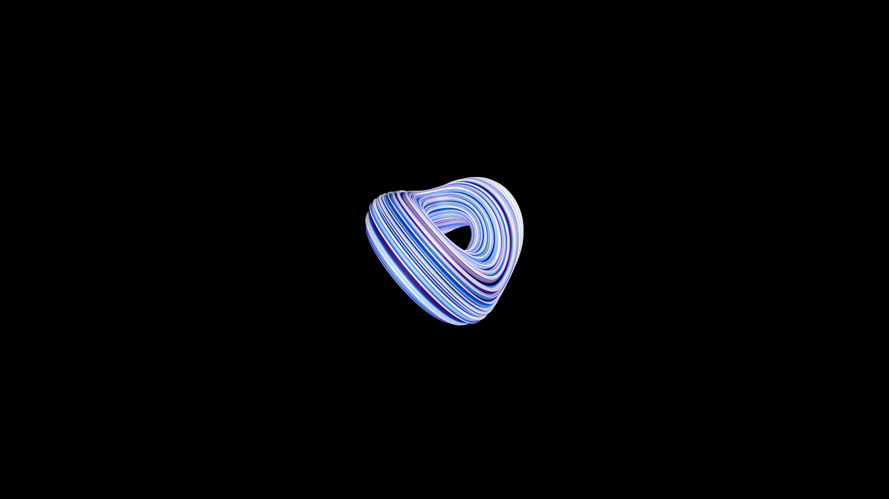
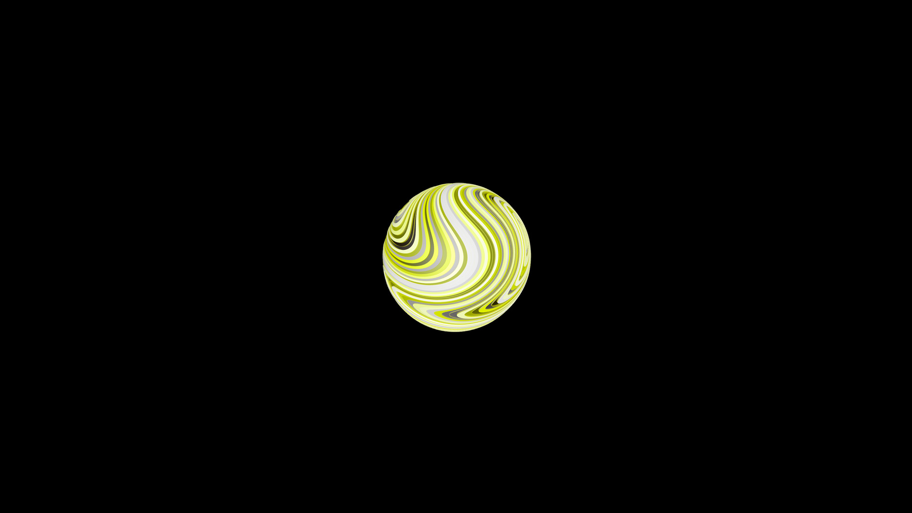
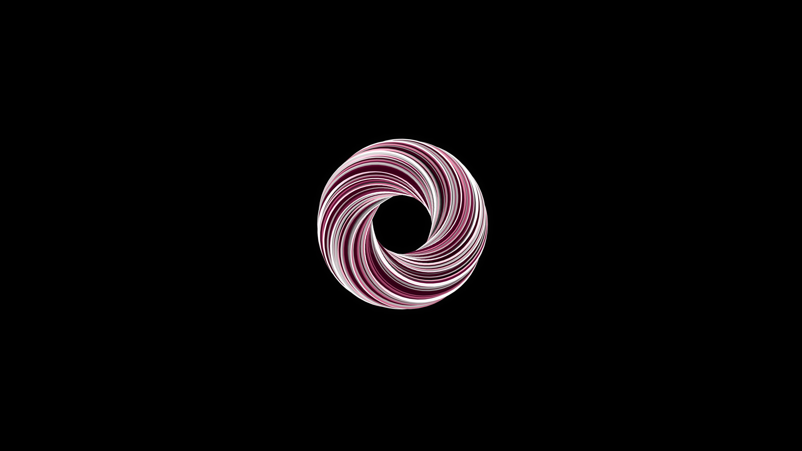
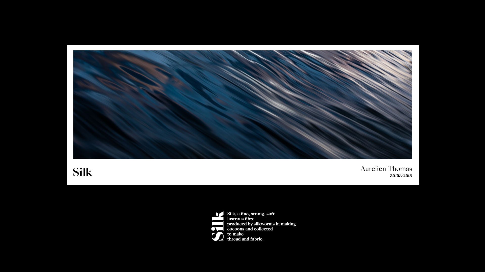
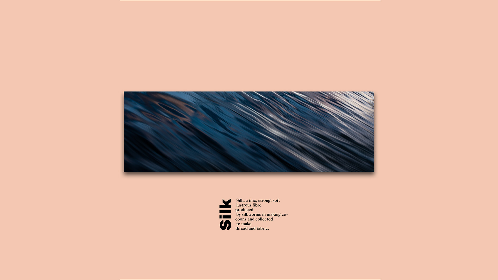
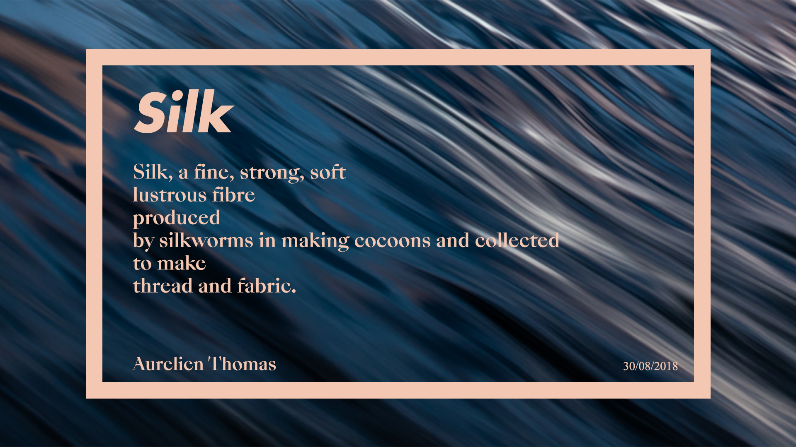

Janvier 2018
Ce projet experimental avait pour but de tester les possibilitées
offertes par les materiaux sur Cinema 4D. C'est ce projet qui m'as initié aux logiciels de creation 3D.
Voir plus
  Septembre 2018
Ce projet est basé sur le principe de creer 3 posters / creations graphiques avec
une meme image. La photo que j'ai utilisé est une pose longue sur une cascade que j'avais photographié l'année
passeé. J'ai aussi voulu explorer le concept de melanger des polices avec et sans serif pour creer un contraste
important. Principe que j'ai finalement appliqué durant la creation de ce site.
Voir plus
  